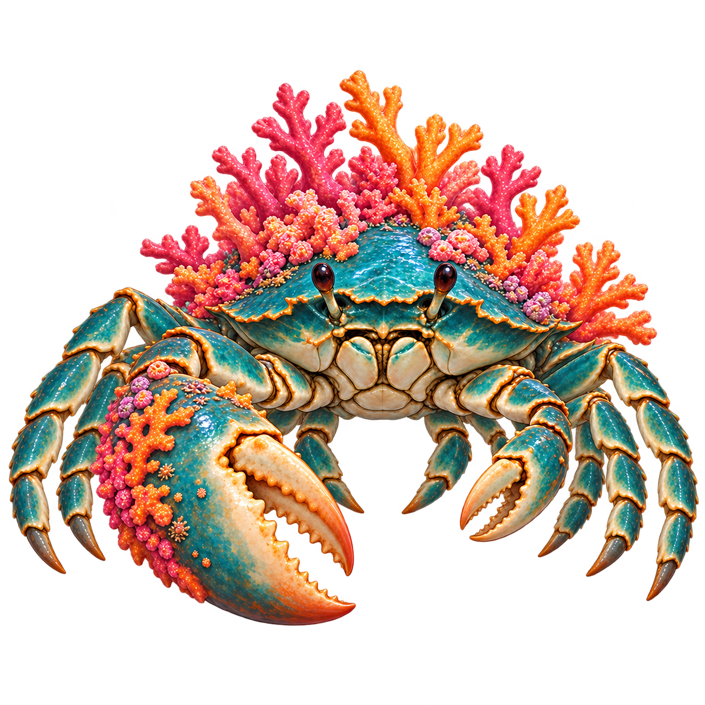
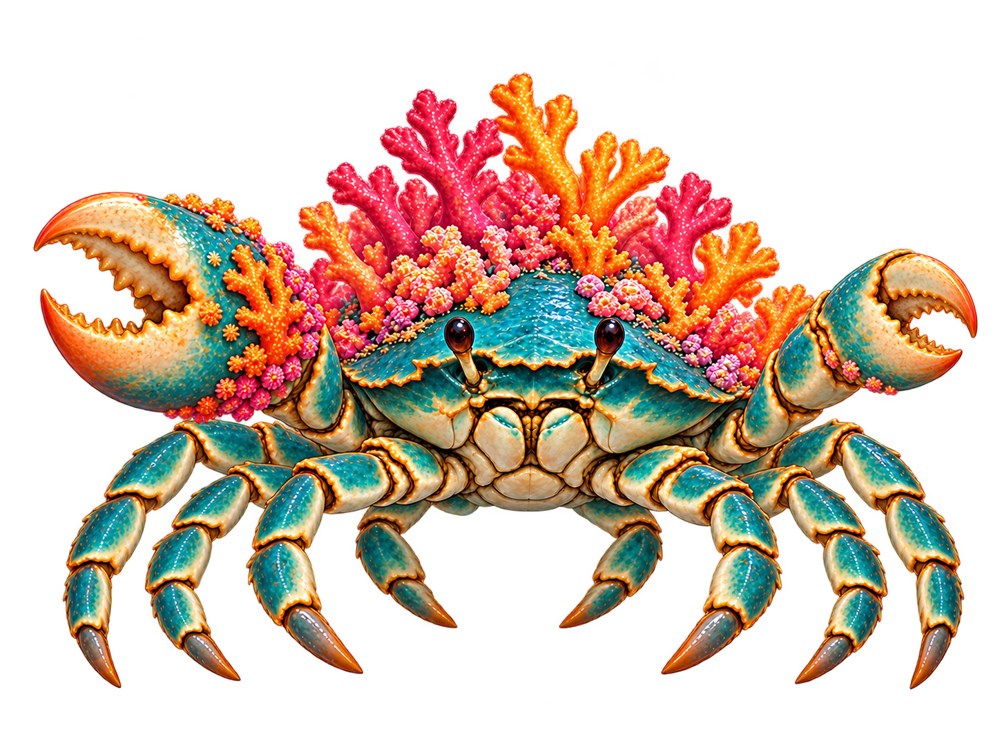
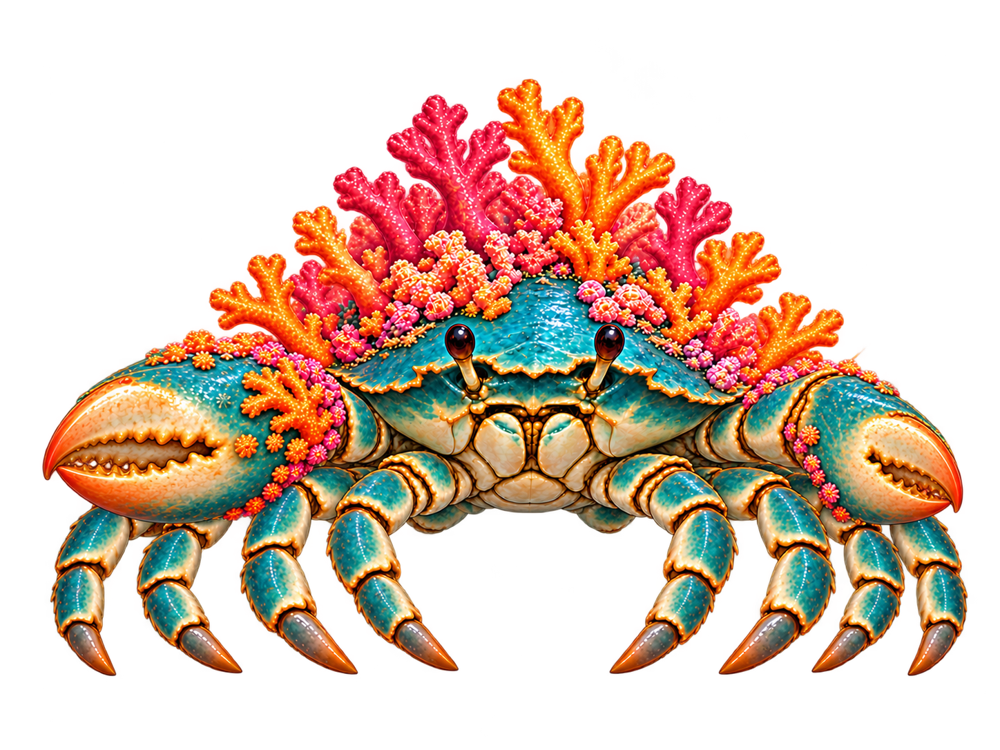

Draft reference comparison. Count eight walking-leg chains separately from the two claw arms. Preserve the large right claw on viewer-left. A plausible outline alone does not approve limb anatomy.
Original: leg roots and near/far overlap remain unresolved.

Candidate: inspect every root, joint and foot before motion authoring.

V2: four walking tips per side are visible. Inner legs remain tucked; outer leg roots overlap. Raised claws are a construction pose, not yet the final idle.

Rest study: eight tips reach the ground band, claws lowered. Outer roots remain concealed; shell/coral details differ from original.